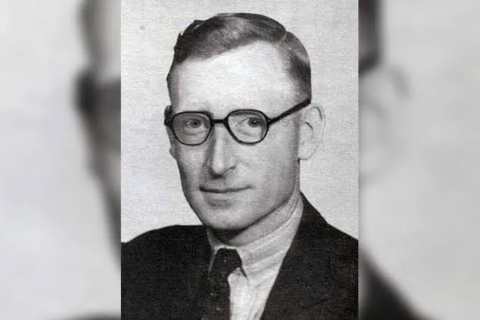
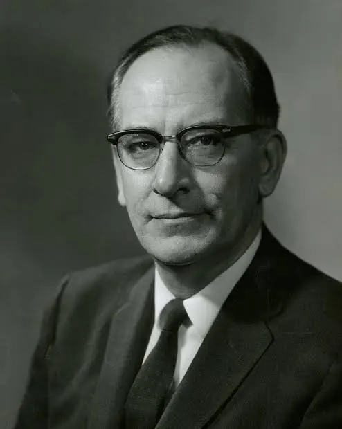
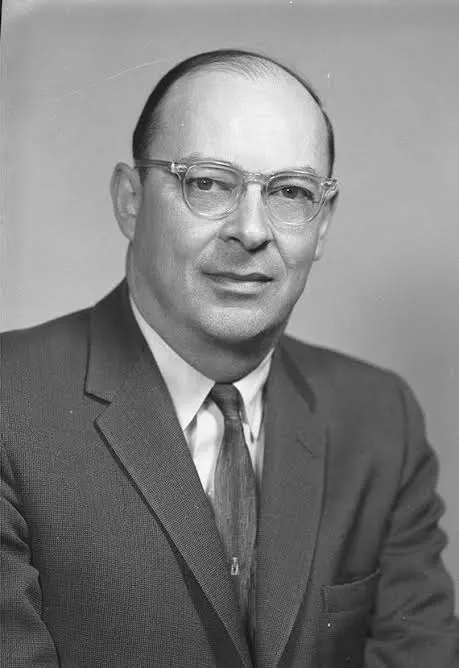
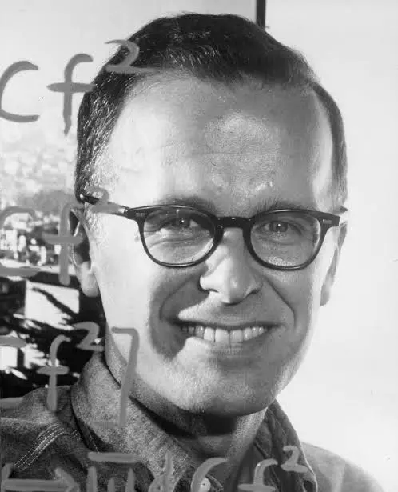
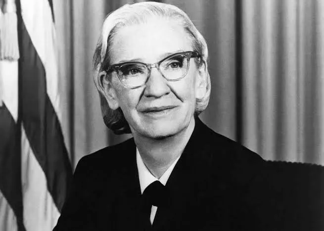
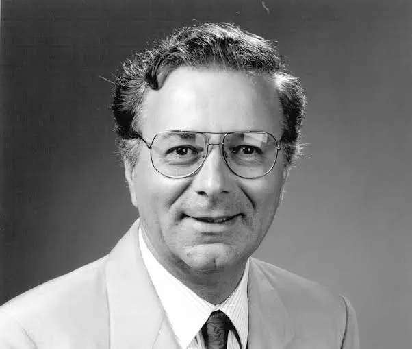

Ingeniero Britanico que diseñó el ordenador Colossus

Físico estadounidense que diseñó el ENIAC(primera computadora electrónica)

Fue un ingeniero eléctrico y físico estadounidense que diseñó el transistor

Fue un científico de la computación estadounidense y creó e implemento FORTRAN (Lenguaje de programación)

Fue una científica de la computación y militar estadounidense y inventó el COBOL (Lenguaje de programación)

Es un ingeniero eléctrico y físico estadounidense conocido por ser el diseñador del primer microprocesador comercial